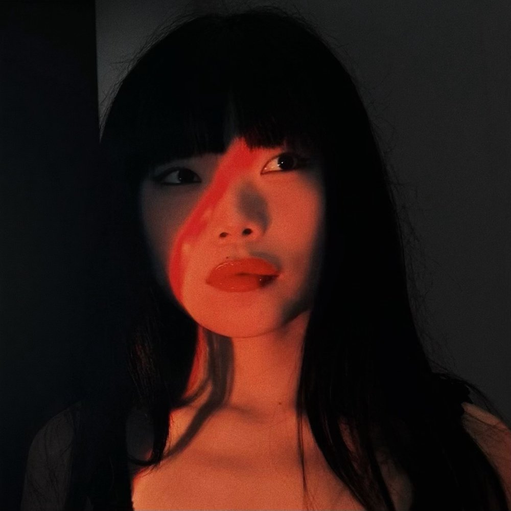

Yidi Zheng is a PhD candidate in Cultural Anthropology at Duke University. Her dissertation project explores the private governance of emerging risks in China–Africa maritime trade, as well as the ways in which the same risks are identified, reinterpreted, and mediated by the infrastructure of brokerage.
Her fieldwork is supported by the Wenner-Gren Foundation and by her occasional work as a DJ of electronic music with transnational roots.
Before joining Duke, she earned an M.A. in Migration and Diaspora Studies (with Distinction) from SOAS, University of London, and a B.A. in French Language and Literature from Sichuan University. Her earlier research and advocacy focused on rural-to-urban labor migration within China's agricultural and industrial sectors.